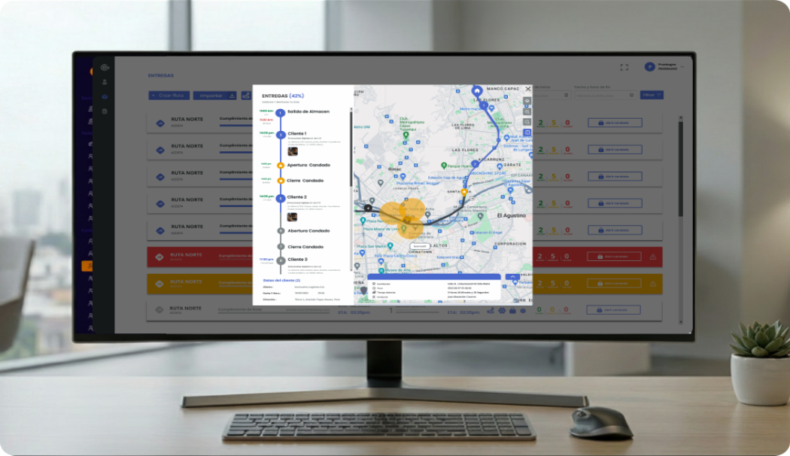

Satelock
Revolutionizing Security
Rediseñando la seguridad de flotas en tiempo real. Reducción del 40% en tiempos operativos mediante diseño estratégico y optimización de flujos con IA.
Explorar caso de estudio
El Desafío: Brecha de Usabilidad

El Problema
Los sistemas legados presentaban una carga cognitiva abrumadora para los operadores. La falta de respuesta en tiempo real y una arquitectura de información fragmentada provocaban retrasos críticos en la detección de incidentes.
- Tiempos de respuesta superiores a 15 minutos.
- Interfaz no adaptativa (Desktop-only).

La Solución
Una plataforma centralizada basada en Atomic Design que optimiza la toma de decisiones mediante visualización predictiva y una jerarquía visual clara diseñada para entornos de alta presión.
- Monitoreo en tiempo real con latencia < 1s.
- Ecosistema responsivo y notificaciones inteligentes.
AI-Driven Process: Acelerando el Workflow
Implementación de herramientas de IA para maximizar la eficiencia creativa y técnica.
Midjourney
Generación de activos visuales complejos y texturas abstractas para el sistema de diseño, manteniendo una estética futurista y profesional.

ChatGPT
Refinamiento de UX Writing, microcopy y estructuración de la documentación técnica para asegurar claridad en cada punto de contacto.
Claude AI
Optimización de componentes React y lógica de negocio, reduciendo el tiempo de desarrollo de prototipos funcionales en un 30%.
Stitch Gemini
Generación de contenido contextual dinámico y narrativas de usuario complejas, acelerando la creación de activos de alta fidelidad.
Figma Make
Automatización de layouts y escalado de sistemas de diseño, permitiendo entregas técnicas en tiempos récord sin comprometer la calidad.
Data-Driven Optimization
Validamos cada decisión de diseño mediante un stack analítico robusto. Utilizamos GA4, Hotjar y Mixpanel para monitorizar el comportamiento real de los operadores, identificando cuellos de botella críticos en el dashboard de monitoreo y optimizando flujos mediante evidencia empírica.
Ciclo continuo de iteración basado en datos.
Estructura simplificada.
Control total.